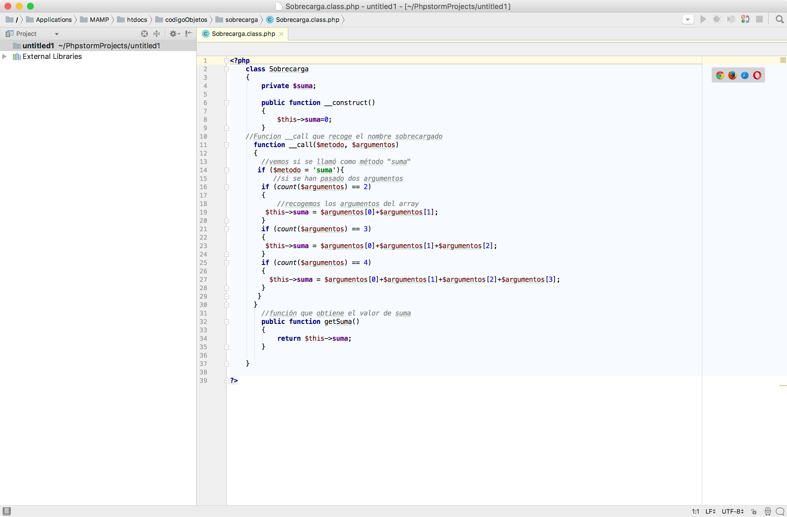

4.2.- PHP Storm.
PHP Storm es un IDE comercial para PHP. Soporta la mayoría de framework basados en PHP, como Symfony, Drupal, Wordpress, Zend framework, Yii y CakePHP entre otros.
Actualmente es uno de los IDE más completos para trabajar con PHP. A pesar de tratarse de software comercial, cuya licencia puede obtenerse desde 149 dolares al año, existe la posibilidad de obtener una licencia gratuita para miembros de la comunidad educativa.
Soporta la mayoría de las tecnologías orientadas a la elaboración del front-end de las páginas web, como HTML5, CSS, TypeScript y JavaScript. Además permite visualizar los cambios en tiempo real en un navegador, reformatear el código de forma automática, depurarlo y realizar test de pruebas.

Caso práctico
Accede a la página oficial del IDE Php Storm, https://www.jetbrains.com/phpstorm/ regístrate como miembro de la comunidad educativa. Una vez tengas tu cuenta de usuario, descárgate el IDE y pruébalo en tu computadora.